Expand all Collapse all Leave Norin in exile when his own ability sends him there. Moving him to the command zone prevents that ability from returning him, breaks the engine, and adds commander tax. The deck turns his repeated returns into damage and theft while its chaos effects disrupt opposing plans. How the coward actually works 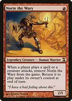Norin the Waryany player's spell cast or any creature attacking makes him flee. He normally returns at that turn's end step, under his OWNER's control. This can happen on every player's turn, but only if something actually triggers him. A spell or attack makes Norin's ability trigger; he does not leave until that trigger resolves. Activated and triggered abilities do not automatically frighten him. A return followed by a new spell during an end step exiles him until the NEXT end step, usually on the following turn. You usually cannot attack or block with Norin: declaring an attack makes him leave, and an opponent declaring attackers does the same before blockers. Use the other creatures and tokens for combat. Make the chaos favor your engine 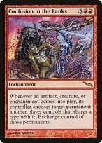+Confusion in the Ranks + Norin the WaryNorin's return can exchange him for an opponent's creature. After a later spell or attack, he flees from their battlefield and returns to you, while you keep the creature you acquired. Let the exchange resolve before casting a spell that would make him leave. +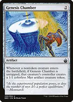Confusion in the Ranks + Genesis ChamberMyr are both artifacts and creatures, so they can trade for either kind of opposing permanent. This is symmetrical: opponents' new permanents can take your engines too. Track ownership separately from control. Confusion in the Rankstriggers on itself entering and may immediately trade itself for an opposing enchantment. Exchanges are mandatory when legal targets exist, and both objects must remain exchangeable. You do not need to control Confusion for your entering creature's controller to choose the exchange target. 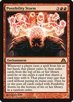Possibility Stormscrambles spells cast from HAND into another spell sharing a card type. Norin cast from the command zone and spells cast from exile bypass it. Develop your important engines before casting Storm; it also disrupts your own hand-based interaction. 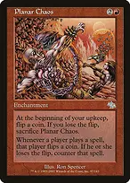+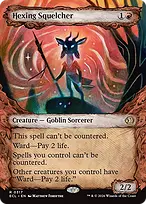Planar Chaos + Hexing Squelchereveryone flips for each spell, but your spells cannot be countered while Squelcher remains under your control. Opponents still have a chance to resolve theirs, and a lost upkeep flip sacrifices Planar Chaos. Squelcher does not stop Possibility Storm from exiling spells. 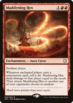Maddening Hextaxes a player's noncreature spells with a die roll, then moves randomly to another opponent. It never deliberately moves onto you. Under Possibility Storm, both the original and replacement noncreature casts can matter, depending on who is enchanted when each spell is cast. Disrupt Decorumturns opposing creatures toward one another while your burn engines continue working. Goad is strongest with several opponents; with only one opponent left, their creatures can still attack you. 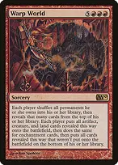Warp Worldthe late-game reset for a token-rich board. Tokens you OWN increase your reveal count, so the deck can convert expendable bodies into real permanents. Stolen cards still count for their owners, and opponents receive a new board too. Do not cast it when your established burn already wins. Warp World reveals based on OWNED permanents, not controlled permanents. Put artifacts, creatures, and lands in together first, then enchantments; resolve entrance triggers only after the spell finishes. An entrance-damage enchantment arriving in the second batch did not see the earlier creatures. Tokens count, but never physically shuffle token markers into libraries. +Possibility Storm + Warp Worlda Warp World cast from hand will normally be replaced by Storm, so resolve Warp before Storm or cast Warp from exile using one of this deck's play-permission effects. No effect here guarantees the reset will improve your position. Every entrance lowers life totals +Impact Tremors + Purphoros, God of the Forgethe core damage engines. Each creature entering under your control hits EVERY opponent for one or two respectively, so the deck advances against three players at once. Agate Instigatorpay offspring when four mana is available to create a second damage engine. The original sees its offspring enter; future creatures trigger both. A copied Instigator does not receive an offspring token unless its own offspring cost was actually paid. ++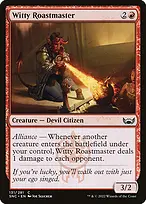General Kreat, the Boltbringer + Molten Gatekeeper + Witty Roastmasterredundant creature-based damage engines make Norin useful even without your best enchantment. Gatekeeper's unearth supplies a temporary burst; Kreat can also create a Goblin when your Goblins attack. Weftstalker Ardenttriggers from artifacts as well as creatures, so Treasures and mana rocks also deal table damage. An artifact creature entering is one event and triggers it once. Warp lets you deploy it for one mana and recast it from exile on a later turn. 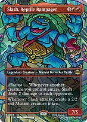Slash, Reptile Rampagera second two-damage-per-opponent engine with a substantial body. Its own attack makes another creature, so it can pressure the table even when Norin is unavailable. Terror of the Peaksturns an entering creature's power into targeted removal or player damage. Use it to clear a dangerous utility creature when that protects the engine, rather than always sending damage at a life total. Outpost Siegechoose Khans when you need another card to play each turn, or Dragons when you already have cards and want Norin's departures to deal damage. Dragons also triggers when your tokens die or leave; the chosen mode is fixed while this Siege remains on the battlefield. Multiply the damage without an infinite loop +Genesis Chamber + Purphoros, God of the Forgewith Chamber untapped, each Norin return creates a Myr. Those two entrances deal four damage to each opponent, before any other modifiers. Chamber also gives opponents Myr when their nontoken creatures enter. ++Panharmonicon + Genesis Chamber + Purphoros, God of the Forgeone Norin return creates TWO Myr and gives two Purphoros triggers for Norin and for each Myr: six triggers, twelve damage to each opponent, assuming you retain control of the engines and no one interrupts. Panharmonicondoubles entrance triggers, not Norin's flee ability or damage-replacement effects. If you control Confusion, it also doubles applicable exchange triggers; that does not give you two stolen permanents for a single Norin. The first exchange changes who can benefit from the next. +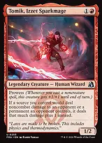Torbran, Thane of Red Fell + Tomik, Izzet Sparkmageincrease each small damage event. Torbran adds two from your RED sources; Tomik adds one to your noncombat damage. These scale especially well with the table-wide pings. +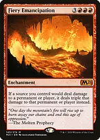Solphim, Mayhem Dominus + Fiery Emancipationdouble or triple damage to accelerate an established engine. Solphim only doubles your noncombat damage to opponents and their permanents; Emancipation triples all damage your sources deal, including damage to your own creatures from a sweeper. When additive and multiplicative replacement effects both apply, the affected player or permanent's controller chooses their order. Calculate the minimum legal damage, rather than automatically adding first and multiplying afterward. Make bodies and turn them into resources Mogg War Marshalprovides its own entrance, a Goblin on entering, and another Goblin on dying. Declining echo is often correct when you want the death token and would rather spend the mana elsewhere. Siege-Gang Commandersupplies four bodies from one spell, creating a large damage burst. It also lets you sacrifice a Goblin for targeted damage, including Goblins an opponent is about to steal. +Kiki-Jiki, Mirror Breaker + Siege-Gang Commandercopy Siege-Gang for four more entrances. The three Goblin tokens remain after the copied Commander is sacrificed. You can activate Kiki after an end step has begun so its copy survives until the next end step. Kiki-Jiki, Mirror Breakercopy nonlegendary damage engines, utility creatures, or token makers. It cannot copy Norin, Kreat, Torbran, or your other legends. No deliberate infinite untap loop is included. Fable of the Mirror-Breaker // Reflection of Kiki-Jikicontributes a Treasure-making attacker and hand filtering, then becomes a repeatable creature-copy engine. The transformed Reflection needs to be free of summoning sickness before using its tap ability, and each activation costs one mana. Ragavan, Nimble Pilfererearly attacks supply Treasures and occasional stolen spells. Those spells are cast from exile, so Possibility Storm does not replace them. Ragavan does not fix their colored mana costs; use the Treasure if needed. +Kher Keep + Sokenzan, Crucible of Defiancecreature creation from lands gives you plays under spell-disruption effects. Keep's Kobold is also Skullclamp material; Sokenzan's channel ability gives two bodies at instant speed. Get mana ahead of the expensive enchantments 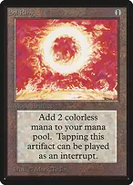+++Sol Ring + Arcane Signet + Mind Stone + Wayfarer's Baubleearly acceleration gets the four- and five-mana engines down while you can still interact. Bauble turns into a basic Mountain; Mind Stone can become a card when mana is plentiful. Ruby Medallionreduces generic costs of red spells, including expensive chaos enchantments. It does not reduce the costs of your colorless artifacts or activated abilities. +Relic of Legends + Norin the Warytap Norin for mana while his flee trigger is still on the stack. Because this is Relic's ability, a newly returned Norin can be tapped immediately. Spend mana produced during an end step before that step ends. 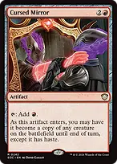Cursed Mirrorcopy a useful creature for an entrance burst and possibly a hasty activation, then keep a red mana rock afterward. A copy of a legendary creature you already control invokes the legend rule, so choose carefully. 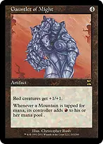Gauntlet of Mightdoubles your Mountains' mana and strengthens red creatures. It is symmetrical and can help opponents' Mountains and red creatures too. The boost also means a 1/1 red Goblin no longer dies just from wearing Skullclamp. 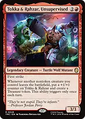Tokka & Rahzar, UnsupervisedNorin leaving supplies a Treasure and a counter once each turn. This works from nontoken creatures leaving, not from each Myr dying. The growing body also becomes a credible attacker. 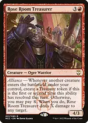+Rose Room Treasurer + Genesis ChamberNorin and his Myr can provide the first two alliance resolutions each turn, earning two Treasures. Later resolutions offer paid damage instead; this is not unlimited Treasure production. Jeska's Willchoose both modes while Norin is on the battlefield as you cast it. His resulting flee trigger does not undo that choice. Cast Will before other spells exile him, and use the same-turn cards promptly. Draw through your own chaos 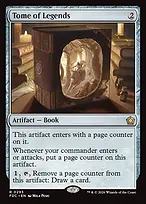Tome of LegendsNorin's returns replenish page counters, but drawing still costs one mana and a tap. This is steady draw, not a card automatically drawn on every return. +Skullclamp + Genesis Chamberturn 1/1 Myr into two cards apiece. Equipping is an activated ability, so it neither triggers Norin nor gets replaced by Possibility Storm. Equipping Norin himself can kill him; use the disposable tokens. The One Ringsupplies the largest independent draw engine and a turn of protection when CAST. Protection does not stop its own upkeep life loss. Returning it from a graveyard resets burden counters but does not grant the cast-only protection. 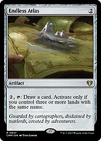+Endless Atlas + War Roomrepeatable draw that works while spell casts are being disrupted. The 27 basic Mountains reliably support Atlas; War Room costs one life in this mono-red deck. +Reckless Impulse + Wrenn's Resolveprovide two cards playable through the end of your NEXT turn. Spells cast from that exile zone bypass Possibility Storm, though Planar Chaos still triggers. +Valakut Awakening // Valakut Stoneforge + Wheel of Fortunereplace an unproductive hand. Awakening is selective and can be a tapped red land; Wheel gives every opponent seven cards too, so weigh who benefits before refilling the table. +Goblin Engineer + Goblin Welderrecover sacrificed, discarded, or destroyed artifacts. Engineer returns only artifacts with mana value three or less; Welder can recover larger ones. Myr and Treasures are useful sacrifice material. Both need to be able to tap. +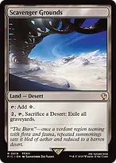Buried Ruin + Scavenger GroundsRuin recovers an artifact to hand, while Grounds clears all graveyards. Grounds also exiles your own recovery targets, so activate it when stopping an opposing graveyard plan matters more. Answer the threat that really matters +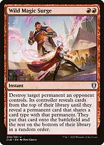Chaos Warp + Wild Magic Surgeyour broad answers to enchantments and other difficult permanents. Both can give an opponent a replacement; Surge destroys and only targets an opponent's permanent, while Warp shuffles and can answer indestructible. Deflecting Swatfree only if you control your commander when casting it. Norin is often in exile when you need protection, so do not count on the free mode. Casting Swat with him present locks in the discount before he flees. ++Pyroblast + Red Elemental Blast + Tibalt's Trickeryemergency stack interaction. The Blasts answer blue threats efficiently; Trickery can counter a wider range but grants a random replacement. Possibility Storm can disrupt these when cast from hand. ++Abrade + Vandalblast + Untimely Malfunctionremove important artifacts or a small creature; Malfunction can also redirect a single-target spell or ability. Overloaded Vandalblast destroys opponents' Chamber-created Myr along with their other artifacts. Blasphemous Acta creature reset that usually leaves Norin safely in exile once his trigger resolves. It also kills many of your damage creatures, so preserve an enchantment engine or rebuild plan before committing. Soul-Guide Lanternone-mana graveyard interaction that Engineer, Welder, and Saga can access. Its mass graveyard mode leaves your own graveyard available for artifact recovery. Find the engine, then the finish →Gamble → Confusion in the Ranksfind the signature theft engine when opponents have creatures worth taking and you can survive the symmetrical exchanges. Gamble can discard the card you searched for. →Gamble → Purphoros, God of the Forgechoose a durable damage engine when you already have Norin and token production. The goal is to end the game while chaos restricts clean answers. →Imperial Recruiter → Agate Instigatorfetch an inexpensive table-damage engine and pay offspring later when you have spare mana. →Imperial Recruiter → Goblin Engineerroute into Genesis Chamber, Skullclamp, or another small artifact when that is the missing role. Recruiter searches printed/current card power in the library and puts its target into hand. →Goblin Engineer → Genesis Chamberput Chamber into the graveyard, then sacrifice an expendable artifact to return it once Engineer can tap. The entrance search does not put Chamber straight onto the battlefield. 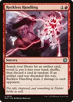→Reckless Handling → The One Ringfind a refill engine when you have enough mana to cast it. Random discard is a real risk; Welder can recover a discarded Ring, but Engineer cannot return its four-mana target directly. →Urza's Saga → Skullclampturn an existing token board into cards. Saga can also find Sol Ring, Wayfarer's Bauble, or Soul-Guide Lantern; it cannot find the two-mana Genesis Chamber. What to keep in an opening hand and how to sequence Keep three lands or a convincing two-land hand with cheap acceleration, plus a draw source or a cheap entrance payoff. Norin is available for one mana from the command zone, so your opening hand needs infrastructure rather than another expensive threat. Nykthos without devotion and a hand full of colorless lands do not pay the deck's red-heavy costs. Lead with a payoff or acceleration when that is stronger than casting Norin immediately. If Ragavan has a likely turn-two hit, leading with it is reasonable. Put a functioning damage or draw engine on the table before the expensive chaos pieces. Cast both-mode Jeska's Will before another spell makes Norin flee. With Relic out, tap him in response to his flee trigger. Do not move him to the command zone unless you have a concrete reason his delayed return will fail. Once Confusion is active, track who owns every traded permanent and resolve exchanges individually. Token generation can steal things, but opponents can trade back for your engines. A Panharmonicon does not magically duplicate the same exchange's benefit. This list has no designed infinite combo, extra-turn chain, or mass land denial. Its strongest draws establish damage before disruption and finish over subsequent turns; roughly turns seven through nine is a useful estimate, not a guaranteed clock. Warp World and multiple exchange triggers take time to resolve, so use the reset when it materially improves your chance of winning.